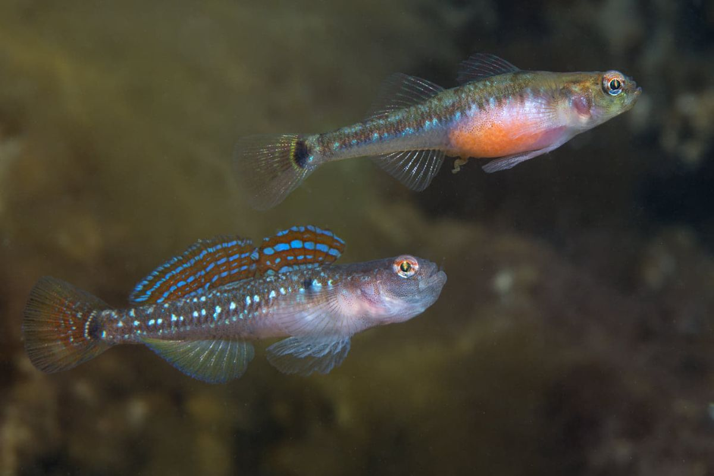
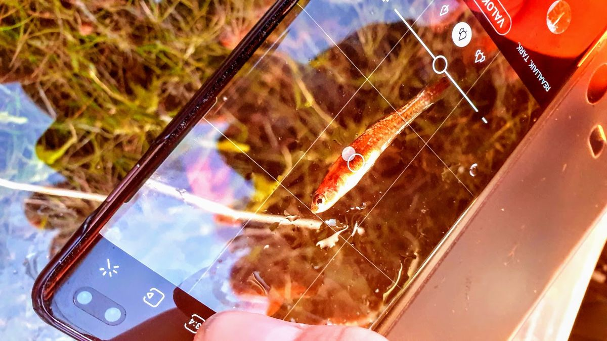
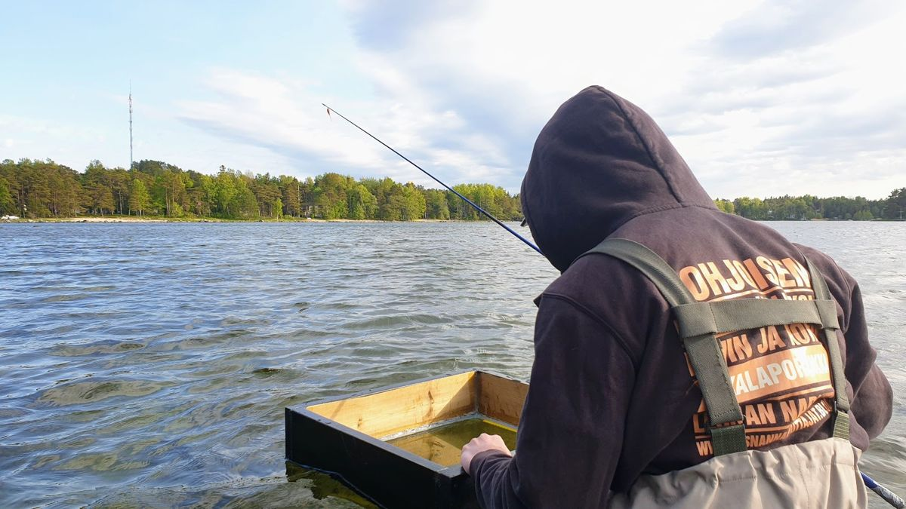
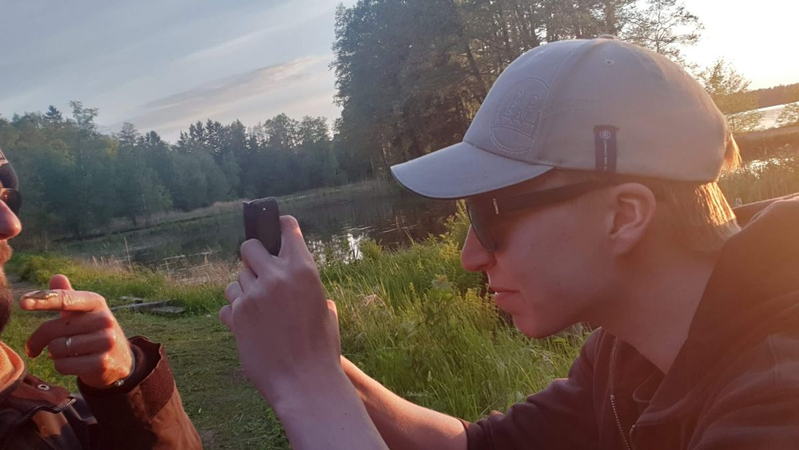

Blogitekstit · Kesäkuu 2020
Lähe juttuseuraksi käymään Hangossa? - Lajikiihkon kutsu


Lajikiihko, tuo Fongareiden salakavala tauti jonka valtaan jää jos sydän vie eikä järki. Tämä on tarina yhdestä miehestä, jonka tämä tauti on vallannut varpaista aina sinne viimeisimpään hiuksen kärkeen asti.
Meidän fongareiden lajimäärät vaihtelelevat oman innostuksen ja halun sekä ajankäytön mukaan. Muutama mainitakseni niin esimerkiksi Timi Laitinen (2018: 52), Mikael Jaakkola (2018: 51), Juuso Triipponen (2020: 43, 2018: 49), minä (2018: 46) ja Miika Kovanen (2020: 43). Tämä tarina kervoo viimeisimmästä herrasta.
Tein etätoimistossani, eli keittön pöydän ääressä töitä. Vieressä Viaplaytä katseli Herra J.
Facebook on yhtenä välilehtenä auki kokoajan ja nyt siinä vilahti merkki, että viesti on saapunut.
"Lähe juttuseuraksi käymään Hangossa. Tuon sut yöksi kotiin." -Miika
Tähän tarjoukseen ei ole vaikea tarttua, kun tietää rannan mille Miika on menossa ja sen kuinka paljon särmäneuloja (Syngnathus typhle) rannalla on. Opittu tieto ja useat koukutetut lajipiste yksilöt kertovat omassa päässäni; nyt mennään ja napataan lajipiste särmiksestä.
Sitä seiskaa mietit? -Juha
"Juu, Se ja kotiin. Särmistä toki jos haluat kokeilla?" -Miika
Seitsenruototokko (Gobiusculus flavescens) on siinä mielessä mielenkiintoinen kalalaji, että se kuolee lisääntymisen jälkeen. Tämä on syy miksi Miikalla on palava halu saada laji koukutettua ennen tämän suureksi kasvaneiden ikäluokan pois nukkumista. Seitsenruototokot lisääntyvät vain kerran ja kuolevat pois.
Karun kohtalon kokeva seitsenruototokko on todella upea ilmestys. Koiraan värimaailma ei häviä trooppisten kalajien väriloistolle ja molempien sukupuolien kyljet välkehtivät upeasti monikirjoisessa värien ilotulituksessa. Vedenpinnan yli tämä lajin värikirjo ei paljastu ja kala on ylhäältä katsoen vain tumma ilmestys.


Tällä pohjalla Miika halusi paikata viikonlopun pettymyksen tokon pyynnissä ja lähteä kun pomo tarjosi mahdollisuutta työreissun ohella kalastamiseen. Tälle reissulle lähdin mukaan särmäneula, viisipiikki ja kaverin auttaminen tavoitteen täyttämisessä.
Lajikalastus, eli tutummin fongaus on kiihkoa, tunnetta ja halua onnistua. Parhaimillaan ja hulluimmillaan se tarkoittaa, että työpäivän päätteeksi hyppää autoon ja ajaa Hankoon vain ja ainoastaan yhden kalalajin tähden. Helpoimmillaan se on ongella istumista hyvässä seurassa kotirannassa pyydettyjä kaloja tunnistellen.
Se on yksin ja yhdessä koettuja onnistumisen ja pettymyksien hetkiä joista voi ammentaa voimaa seuraaviin koitoksiin. Olkoot tämä retki osoitus siitä.
Miikan viestiin oli lopulta helppo vastata myöntävästi. Mielessä siinsi se, että särmäneulan voisi koukuttaa ja kotimatkalla napata vielä viisipiikin. Tämä olisi taas yksi reissu vähemmän näiden lajien perään eikä seuraavan päivän Kemiönsaren nokkakalakeikan päätteeksi tarvitsisi poiketa motarilta Lohjalle.
Kaksi kalamiestä ja pitkä suora tai mutkainen tie. Yhteinen rakkaus lajiin nimeltä kalastus, tarkemmin lajikalastus eli fongaus ei tarjoa hiljaisia hetkiä automatkalle. Juttua riitti Kalamaratonista, onnistumisista ja pettymyksistä. Takaraivossa kuitenkin yhteinen tavoite; seitsenruototokko ja särmäneula.

Saavuimme rantaan jossa olimme Timin kanssa nähneet tokkoja ja paikalle saapui myös Helsingin Kalamaratonissa tutuksi tullut Roope. Jokaisella maillä on ikkunat kellumassa vedenpinnalla, näistä avautui upea vedenalainen maailma. Muutaman särmäneulan yrittämisen jälkeen ja seitsentokkojen uupumisen takia päätimme vaihtaa rantaa sille mistä elämänpisteitä on noussut.
Kahden auton karavaanimme kulki halki omakotialueen, saapuen lopulta tutulle metsäparkkikselle. Näillä jalansijoilla elettiin upeita hetkiä toukokuun lopulla, Kalamaratonin peruuntumisien tuska varisi pois autolle kävellessä ja seitsenruototokon kohdalla (X)-merkin piirtyessä blogini Fongausarkisto-sivulle.
Nyt kolmen hengen seurueemme kulki halki metsän saapuen viimein auringonsäteiden värjäämän meren ääreen. Vieno aavalta selältä puhaltava tuuli hiveli poskipäitämme ja muodosti vedenpinnalle pienen väreilyn. Ilman vesi-ikkunalauttoja olisi kalojen pyynti täysin tai lähestulkoot mahdotonta.
Kahlasin veteen tutun kiven kohdalta. Ikkuna veteen ja etsimään tokkoja sekä särmäneuloja, syöttinä koukussa oli joku katkarapu. Pääsinkin melko nopeasti sitä tarjoamaan kalalle, mutta tuttu kalan kuono kääntyi ja sukelsi kohti rakkoleväpuskien syvyyksiä. Näitä rantoja Miika oli yksikseen viikonloppuna kolunnut Kalahavainnot.fi -palvelusta tutkittujen tietojen pohjalta.
Samalla huomasin tutun tumman hahmon.


Täällä on, huusin Miikalle.
Nopeasti vieressäni oli mustaan huppariin sonnustautunut fongari, selässä paidassa komeili Lesnan naputtajien slougan: Pohjoisen pallonpuoliskon kovin ja komein kalaporukka. Kyseisen seuran jäseniin ollut ilo ja kunnia tutustua Joensuun Kalamaratoneissa ja sen jälkeen yhteisillä kalaretkillä.
Vierestä kuului ärräpää kun ikkunalle nousi kymmenpiikki. Uusi syötin tiputus ja pääsin taputtamaan äijää olkapäälle;
Se on seitsenruototokko, sanoin onnitellessani.
Huikea paikkoreissu mistä kiitos kuuluu Miikan pomolle, kun tarjosi mahdollisuutta työreissun ohella kalastamiseen


Loppuilta meni rupatellessa ja särmäneuloille väärää syöttiä tarjotessa. Se ainoa uusi lajipiste tuli Porlan lammikosta kun rannan tuntuman ryteiköstä nousi tumman puhuva pieni kala kuvattavaksi. Särmäneula antaa odottaa, ehkä jo huomenna mietin mielessäni.
Lohjalle ajaessamme Roopelta tuli viesti; sain vihdoin.
Tätä on lajikalastus parhaimmillaan - upeita onnistumisen hetkiä, tunteita ja pettymyksiä.
Loppukaneettina todettakoot, että Suomi on pullollaan upeita nuoria ja hieman vanhempia joiden oppiessa itse jippoja ja seuratessaan meitä muita "konkareita" on silloiset ennätyslajimäärät vaarassa ja rikottavissa. Historiallisia hetkiä odotetaan lähivuosina, 60 eri kalalajia suusta koukutettuna Suomen vesistä.
Kysymys ei ole milloin se rikotaan vaan kuka sen tekee? Oletko se sinä?
* Merkittyjä ei fongausyhteisö ole vielä koukuttanut ja ! on saatu jo vuonna 2020.
- Ahven - Perca fluviatilis !
- Allikkosalakka - Leucaspius delineatus !
- Ankerias - Anguilla anguilla !
- Harjus - Thymallus thymallus
- Hauki - Esox lucius !
- Hietatokko - Pomatoschistus minutus !
- Hopearuutana - Carassius gibelio !
- Härkäsimppu - Triglopsis quadricornis !
- Isosimppu - Triglopsis quadricornis !
- Kampela - Platichthys flesus !
- Karppi - Cyprinus carpio !
- Kiiski - Gymnocephalus cernua !
- Kilohaili - Sprattus sprattus
- Kirjoeväsimppu - Cottus poecilopus
- Kirjolohi - Oncorhynchus mykiss !
- Kivennuoliainen - Barbatula barbatula !
- Kivinilkka - Zoarces viviparus !
- Kivisimppu - Cottus gobio !
- Kolmipiikki - Gasterosteus aculeatus !
- Kuha - Sander lucioperca !
- Kuore - Osmerus eperlanus !
- Kymmenpiikki - Pungitius pungitius !
- Lahna - Abramis brama !
- Liejutokko - Platich - Pomatoschistus microps !
- Lohi -Salmo salar !
- Made -Lota lota !
- Miekkasärki - Pelecus cultratus
- Mustatokko - Gobius niger !
- Muikku - Coregonus albula !
- Mustatäplätokko - Neogobius melanostomus !
- Mutu -Phoxinus phoxinus !
- Nieriä - Salvelinus alpinus
- Nokkakala - Belone belone !
- Pasuri - Blicca bjoerkna !
- Piikkikampela - Scophthalmus maximus !
- Piikkimonni - Ameiurus nebulosus !
- Piikkisimppu - Taurulus bubalis
- Puronieriä - Salvelinus fontinalis !
- Rantanuoliainen - Cobitis taenia
- Ruutana - Carassius carassius !
- Salakka -Alburnus alburnus !
- Seipi - Leuciscus leuciscus !
- Seitsenruototokko - Gobiusculus flavescens !
- Siika - Coregonus lavaretus !
- Silakka - Clupea harengus membras !
- Siperiansampi -Acipenser baerii
- Sorva - Scardinius erythrophthalmus !
- Sulkava - Ballerus ballerus !
- Suutari - Tinca tinca !
- Särki - Rutilus rutilus !
- Särmäneula - Syngnathus typhle !
- Säyne - Leuciscus idus !
- Taimen - Salmo trutta !
- Toutain - Aspius aspius !
- Turpa - Squalius cephalus !
- Turska - Gadus morhua
- Törö - Gobio gobio !
- Vaskikala - Spinachia spinachia !
- Valkoevätörö - Romanogobio albipinnatus
- Viisipiikki - Culaea inconstans !
- Vimpa - Vimba vimba !
- * Harmaahieriä - Salvelinus namaycush
- * Isotuulenkala - Hyperoplus lanceolatus
- * Pikkutuulenkala - Ammodytes tobianus
- * Teisti - Pholis gunnellus
2020 hanko Lesnan Naputtajat Miika Kovanen seitsenruototokko SpeciesFIN53 särmäneula viisipiikki